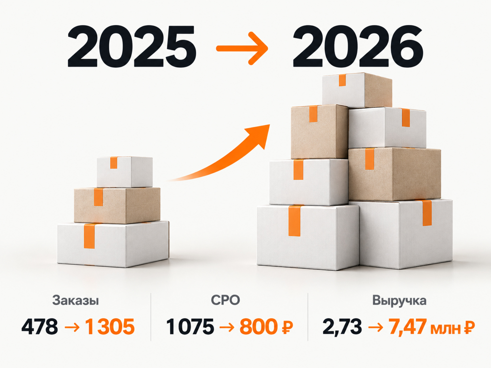
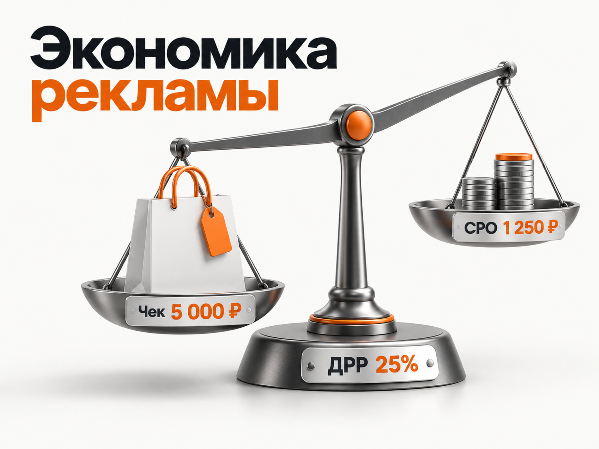

Блог о платном трафике
Продвижение БАДов в 2026 году: инструкция и прогноз
Продвижение БАДов в интернете возможно, в том числе через Яндекс Директ. Но это одна из тех ниш, где рекламную стратегию нельзя отделять от требований законодательства, модерации и экономики конкретного товара.
Для интернет-магазина БАДов я бы строил продвижение вокруг четырёх направлений: сформированный спрос в Поиске, товарная реклама, контент для более холодной аудитории и SEO. А эффективность оценивал бы не по кликам и CTR, а по стоимости заказа, выручке и ДРР.
При этом универсального ответа в духе «заказ БАДов должен стоить 700 рублей» нет. Ассортимент, средний чек, маржинальность, узнаваемость бренда, регион и повторные покупки слишком сильно влияют на результат. Поэтому прогноз нужно строить от экономики конкретного магазина.
Можно ли рекламировать БАДы в Яндекс Директе
Да. Яндекс прямо разрешает продвижение биологически активных добавок, кроме БАДов с указанием на лечение. Для запуска в России потребуется копия свидетельства о государственной регистрации конкретного наименования БАД. Требования распространяются не только на объявление, но и на страницу, куда ведёт реклама.
В рекламе нельзя создавать впечатление, что БАД является лекарственным средством или обладает лечебными свойствами. Нельзя ссылаться на конкретные случаи излечения, использовать благодарности людей в связи с применением БАД, побуждать отказаться от здорового питания или представлять исследования как доказательство лечебного эффекта. Эти ограничения закреплены и в статье 25 Федерального закона «О рекламе».
Это важный момент для семантики и посадочных страниц. Формулировки, построенные вокруг лечения заболеваний, могут создать проблему ещё до того, как начнётся оптимизация рекламы.
Предупреждение «Не является лекарством»
Реклама БАДов должна содержать предупреждение о том, что рекламируемый товар не является лекарственным средством.
В обычные текстовые объявления Яндекс добавляет предупреждение автоматически. В графические объявления, медийные баннеры и видеорекламу его необходимо добавлять самостоятельно.
Для графических объявлений в ЕПК и медийных баннеров предупреждение для БАДов должно занимать не менее 10% площади. В видео - не менее 7% площади кадра и присутствовать минимум 5 секунд. Эти размеры соответствуют требованиям закона.
Для интернет-магазина дополнительно действуют требования к рекламе дистанционной продажи, в частности к информации о продавце. Поэтому перед запуском я бы проверял не только сами объявления, но и юридическую информацию на сайте.
Сначала нужно проверить сам товар
У БАД должна быть действующая государственная регистрация. Роспотребнадзор прямо указывает, что продукция без действующего свидетельства о государственной регистрации запрещена к реализации. Для БАДов также действует обязательная маркировка.
Это уже не формальность только для прохождения модерации. Механизм блокировки интернет-ресурсов с запрещёнными БАДами реально применяется. Поэтому я бы не запускал рекламу, пока не проверены регистрация продукта, маркировка, информация на карточке товара и соответствие рекламных формулировок документам.
Насколько конкурентный рынок БАДов
Конкуренция высокая и продолжает расти.
По данным Mera by Okkam, производители БАДов потратили на рекламу в 2025 году около 3,2 млрд рублей. Это на 15% больше, чем годом ранее. Рекламу размещали около 190 производителей, причём более 90 рекламодателей вышли на рынок в течение года.
Около 80% рекламных вложений при этом пришлось на десять крупнейших брендов. Это означает, что новому или небольшому производителю бессмысленно пытаться конкурировать с лидерами только масштабом охвата. Нужны более точный спрос, ассортимент, экономика и сильная товарная страница.
По данным Яндекса, 54% пользователей 18-64 лет покупали витамины или БАДы хотя бы раз за предыдущие полгода, а 71% потребителей используют их регулярно.
То есть проблема рынка не в отсутствии аудитории. Основная сложность - убедить человека выбрать конкретный продукт среди большого количества похожих предложений.
Покупка БАДов редко начинается и заканчивается одним кликом
По данным Яндекса, перед покупкой витаминов и БАДов 32% опрошенных использовали поисковые системы, а 30% читали статьи и подборки. При этом от первого поиска до покупки в среднем проходит около семи дней.
Это объясняет, почему в этой нише плохо смотреть только на последний рекламный переход.
Человек может сначала искать информацию о составе, затем сравнить несколько брендов, почитать отзывы, уйти на маркетплейс, вернуться через поиск и только после этого купить.
Поэтому здесь особенно важны одновременно:
- коммерческий поисковый спрос;
- качественные карточки товаров;
- информационный контент;
- повторные касания;
- корректная аналитика продаж.

Каким должен быть сайт для рекламы БАДов
В интернет-магазине я бы делал отдельную полноценную страницу для каждого продукта, а не отправлял весь трафик на общую категорию.
Покупателю нужно быстро увидеть название продукта, состав, количество действующих веществ, форму выпуска, количество капсул или порций, способ применения, противопоказания, производителя, цену, условия доставки и регистрационные сведения.
Отдельно нужно работать с доверием. В этой нише человек особенно внимательно изучает состав, производителя и отзывы. Но отзывы и другие элементы сайта нельзя превращать в обход рекламных ограничений с историями об излечении.
Если ассортимент большой, имеет смысл создавать ещё и нормальные страницы категорий: например, магний, омега-3, витаминные комплексы и другие товарные группы. Такие страницы можно использовать одновременно для SEO, Поиска и товарной рекламы.
Как запускать БАДы в Яндекс Директе
Поиск
Первым источником я бы собирал сформированный спрос.
Это запросы по конкретным продуктам, брендам, категориям и компонентам, где человек уже выбирает товар. Чем ближе запрос к покупке, тем проще оценить экономику.
Отдельно нужно постоянно проверять реальные поисковые запросы. В БАДах особенно легко получить трафик, где человек на самом деле ищет лекарство, лечение заболевания, медицинскую консультацию или вообще информацию, а не товар.
Подробнее сам принцип работы поисковой рекламы и РСЯ я разбирал в материале «как работает Яндекс Директ».
Товарные кампании
Для интернет-магазина с ассортиментом я обязательно тестировал бы товарное продвижение через фид.
Яндекс позволяет создавать товарные кампании на основе сайта и товарного ассортимента. Для работы кампании нужны Метрика и настроенные цели.
Здесь особенно полезно разделять товары хотя бы по спросу и экономике. Дорогой маржинальный комплекс и дешёвый товар с маленькой маржой не обязательно должны получать одинаковый рекламный приоритет.
РСЯ
РСЯ может давать дополнительный объём и работать с аудиторией до появления прямого поискового запроса.
Но у БАДов есть отдельное ограничение. Яндекс относит некоторые направления, например темы лечения тяжёлых заболеваний, диет и беременности, к деликатным. Для таких объявлений запрещён поведенческий таргетинг и ретаргетинг в сетях. Они могут показываться на Поиске и по тематике страницы в РСЯ.
Поэтому обычная схема «соберём посетителей сайта и догоним всех ретаргетингом» применима не ко всему ассортименту БАДов.
Контентная реклама
Для продукта, который сложно продать напрямую с первого контакта, я бы тестировал связку:
полезный материал -> знакомство с продуктом -> карточка товара -> покупка
В БАДах она логична ещё и потому, что значительная часть покупателей сначала ищет информацию и сравнивает варианты.
Контент здесь должен помогать выбирать продукт, а не маскировать медицинские обещания под статью.
Что использовать кроме Яндекс Директа
Три канала я бы считал действительно важными.
Первый - SEO. Люди активно ищут информацию о витаминах, составах и конкретных добавках до покупки. Поэтому категория хорошо подходит для статей, сравнений, страниц компонентов и оптимизированных карточек товаров.
Второй - маркетплейсы и интернет-аптеки. Их значение продолжает расти.
Третий - собственная база. Для многих БАДов возможны повторные покупки, поэтому экономика первой продажи и экономика клиента на несколько месяцев могут сильно различаться. Но учитывать будущий LTV в допустимой стоимости привлечения стоит только тогда, когда повторные продажи уже подтверждены реальными данными.
Главные показатели рекламы БАДов
Для интернет-магазина я бы выводил на первый план CPO и ДРР.
CPO = рекламные расходы / количество заказов
Он показывает стоимость одного заказа.
ДРР = рекламные расходы / рекламная выручка × 100%
ДРР показывает, какую часть полученной выручки забрала реклама.
Универсальной «хорошей ДРР» не существует. Она должна укладываться в маржинальность конкретного бизнеса. Подробно этот принцип разобран в статье «ДРР в рекламе».
CTR, CPC, количество добавлений в корзину и другие промежуточные показатели нужны для диагностики. Но кампания с дешёвыми кликами совершенно не обязательно приносит дешёвые заказы.
Свежий кейс рекламы витаминов и БАДов
Хороший ориентир даёт опубликованный в 2026 году кейс «Веб-Центра» по бренду премиальных витаминов и БАДов IPSUM. Период работы - с января 2025 по апрель 2026 года.
При сравнении января-февраля двух лет результаты были такими:
- Рекламный бюджет: 514 045 ₽ -> 1 043 976 ₽
- Выручка: 2,73 млн ₽ -> 7,47 млн ₽
- Заказы: 478 -> 1 305
- CPO: 1 075 ₽ -> 800 ₽
- ДРР: 18,81% -> 13,96%
При росте бюджета на 103% количество заказов выросло на 173%, а стоимость заказа снизилась примерно на 25%.
Важный момент: 800 рублей за заказ нельзя считать средней стоимостью заказа БАДов на рынке. Это результат одного конкретного бренда после длительной оптимизации.
В кейсе использовались разделение ассортимента, товарные кампании, отдельная работа с регионами, очистка РСЯ, контентная воронка и анализ рекламы по выручке и ДРР. Весной 2026 года некоторые тестовые кампании, наоборот, показывали ДРР 141% и 229% и были остановлены.
Для прогноза это даже полезнее красивого итогового результата: одна и та же ниша внутри одного проекта может давать совершенно разную экономику.

Как сделать прогноз рекламы БАДов
Я бы не начинал прогноз с чужого CPO. Сначала нужно определить, сколько конкретный бизнес способен платить за заказ.
Допустим:
- Средний заказ - 5 000 ₽
- Допустимый ДРР - 25%
Тогда:
Допустимый CPO = 5 000 × 25% = 1 250 ₽
То есть при такой экономике реклама может тратить до 1 250 рублей на получение заказа, если остальные расходы бизнеса уже учтены при выборе допустимого ДРР.
При рекламном бюджете 100 000 рублей расчётный ориентир будет:
100 000 / 1 250 = 80 заказов
При среднем заказе 5 000 рублей:
80 × 5 000 = 400 000 ₽ выручки
ДРР:
100 000 / 400 000 × 100% = 25%
Это именно расчётная модель, а не обещание результата рекламы.
Подробнее механику предварительного расчёта я разбирал в статье «прогноз бюджета Яндекс Директа».
Что произойдёт при разной стоимости заказа
Для той же модели с бюджетом 100 000 рублей и средним заказом 5 000 рублей:
- при CPO 800 ₽: 125 заказов, расчётная выручка 625 000 ₽, ДРР 16%
- при CPO 1 200 ₽: около 83 заказов, около 417 000 ₽, ДРР 24%
- при CPO 1 800 ₽: около 56 заказов, около 278 000 ₽, ДРР 36%
Это хорошо показывает, почему один вопрос «сколько стоит реклама БАДов» почти бесполезен.
При CPO 1 800 рублей один магазин может быть глубоко убыточным, а другой с высоким средним чеком и большой маржой спокойно продолжит масштабирование.
Свежий опубликованный кейс показывает, что CPO около 800 рублей в этой нише достижим. Но планировать новую кампанию так, будто она автоматически получит такой же результат, я бы не стал.

Какой бюджет нужен на тест
Бюджет нужно считать через допустимую стоимость заказа и объём данных, который мы хотим получить.
Если допустимый CPO равен 1 250 рублей, бюджет 20 000 рублей математически соответствует всего 16 заказам. При бюджете 100 000 рублей это уже около 80 заказов.
Чем меньше объём, тем сильнее несколько случайных покупок или их отсутствие меняют итоговый CPO и ДРР.
Поэтому я бы сначала считал экономику, затем оценивал доступный поисковый спрос через инструменты Яндекса и только после этого определял тестовый бюджет. Не наоборот.
Аналитика для интернет-магазина БАДов
Минимум нужно видеть рекламный источник, заказ и его стоимость.
Лучше передавать в Метрику электронную коммерцию и фактический доход. Если часть заказов отменяется или не выкупается, окончательную оценку рекламы желательно строить уже по реальным продажам.
Логика оценки должна выглядеть так:
расходы -> заказы -> выручка -> CPO -> ДРР -> прибыль
И только после этого я переходил бы к CTR, CPC, запросам, площадкам и другим диагностическим показателям.
Подробнее про такую логику оценки есть в статье «как оценить эффективность Яндекс Директа».
Пошаговый план продвижения БАДов
- Проверить государственную регистрацию, маркировку и возможность легальной продажи каждого рекламируемого продукта.
- Проверить сайт и карточки товаров на формулировки, которые могут восприниматься как обещание лечения.
- Рассчитать средний чек, маржинальность, допустимый CPO и допустимый ДРР.
- Настроить Метрику, электронную коммерцию и передачу выручки.
- Запустить сформированный спрос в Поиске и товарное продвижение для подходящего ассортимента.
- После получения данных тестировать РСЯ, контент и дополнительные аудитории с учётом ограничений конкретной тематики.
- Масштабировать только те категории, кампании и регионы, где рост расходов сопровождается приемлемыми CPO, ДРР и прибылью.
Основные ошибки при рекламе БАДов
- Обещать лечение или результат - отклонения модерации и юридические риски.
- Использовать незарегистрированный товар - невозможность нормального продвижения и риск блокировки.
- Отправлять весь ассортимент на одну страницу - слабое соответствие запросу и товару.
- Смотреть только на CTR и CPC - красивые рекламные показатели без понимания продаж.
- Оптимизироваться по корзинам вместо заказов - алгоритм учится на промежуточном действии.
- Смешивать товары с разной экономикой - общий ДРР скрывает убыточные категории.
- Считать чужой CPO нормой рынка - ошибка в бюджете и ожиданиях.
- Масштабировать рекламу без контроля ДРР - выручка может расти медленнее расходов.
Как я бы продвигал БАДы в 2026 году
Для интернет-магазина с нормальным ассортиментом я бы начал с Поиска и товарных кампаний Яндекс Директа, разделив товары по спросу и экономике. Одновременно настроил бы аналитику до реального заказа и выручки.
Дальше добавлял бы РСЯ и контент для категорий, где это позволяет тематика, а SEO использовал бы для информационного и коммерческого спроса, который возникает задолго до покупки.
Главный ориентир здесь не количество кликов и даже не стоимость заказа сама по себе. Реклама должна приводить продажи с CPO и ДРР, которые выдерживает экономика конкретного продукта.
По свежему кейсу видно, что в хорошо выстроенном проекте можно одновременно увеличивать рекламный бюджет, снижать CPO и удерживать ДРР около 14%. Но этот результат появился после сегментации ассортимента, работы с регионами, товарными кампаниями, контентом и постоянного отключения невыгодных гипотез.
Поэтому прогноз для БАДов я бы всегда строил в обратную сторону: сначала допустимый ДРР и CPO, затем необходимое количество заказов и только после этого рекламный бюджет.